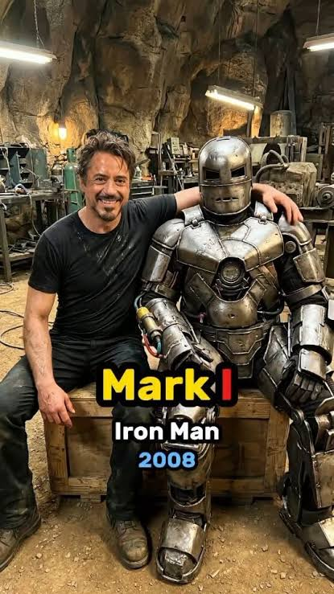

아이언맨이 2007년 촬영했고 2008년 개봉했음
얼추 20주년 다 돼 가는데
기념으로 리메이크나 리부트 나오면 볼 의향 있음?
기존 세계관은 유지하면서 새롭게 리메이크로 만들어도 되고
싹다 새롭게 만드는 리부트식도 괜찮고
뭐라도 나오면 좋겠다는게 내 생각임
재미삼아 한 말이지만 볼 의향 있음?

아이언맨이 2007년 촬영했고 2008년 개봉했음
얼추 20주년 다 돼 가는데
기념으로 리메이크나 리부트 나오면 볼 의향 있음?
기존 세계관은 유지하면서 새롭게 리메이크로 만들어도 되고
싹다 새롭게 만드는 리부트식도 괜찮고
뭐라도 나오면 좋겠다는게 내 생각임
재미삼아 한 말이지만 볼 의향 있음?
톰 홀랜드가 했던 말이 있는데
휴 잭맨의 울버린, 로다주의 아이언맨처럼 배우가 너무 찰떡이라 박힌 작품들은 굳이 손 안 대는 게 맞다고 생각함
톰크루즈 아이언맨 정도면 괜찮을거 같은데
진지하게 별로임
그럼 벨라 램지 시키던가
스파이더맨 계승자인 톰 홀랜드가 한 말인게 킥이네...
토니 역으로 엘리엇페이지 시키면 되겠네
로다주가 은퇴할 쯤에는 또 나올 수 있겠는데,
지금도 너무 현역이라 비교당하기 쉬워서 안될듯
아이언하트로 만족해라
영화판 착한 아이언맨 말고 코믹스버전 개씨빨새끼 아이언맨이면 재밌긴할듯 ㅋㅋㅋㅋ
아이언맨이 20년이나 됐다고..?
보지
아이언맨1 지금 봐도 전혀 촌스럽지 않더라 ㅅㅂㅋㅋㅋㅋㅋ
상업용시간때우기영화를리메이크까지해서봐야하나 싶음 물론아주재미있었고 케릭터도잘살린 좋은영화였음.
가뜩이나 사람들 멀티버스 싫어하는데 리부트까지 하면 머리 아플듯
아 절대안된다 개못생긴아줌마들 존나나올듯